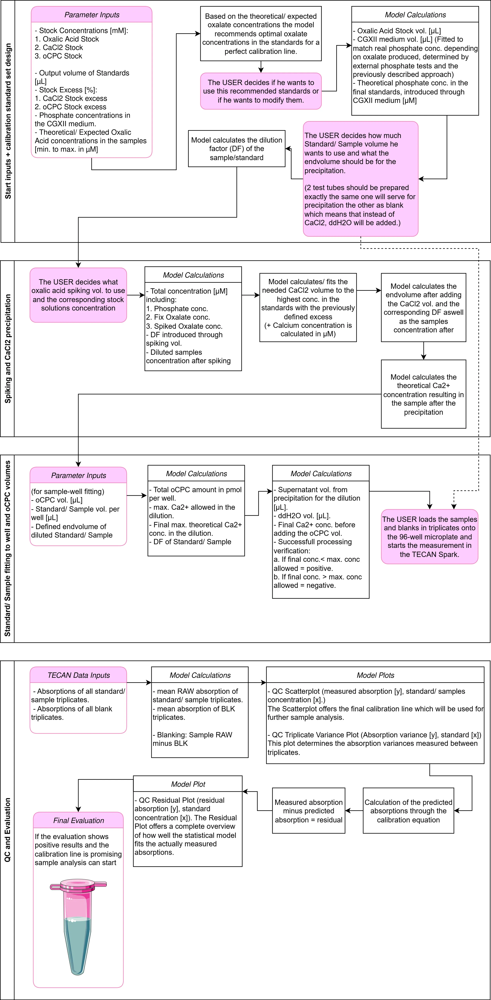

Over the course of nearly six months, we have been developing a new (semi-) analytical assay for the detection and quantification of oxalate in CGXII cell medium samples. Although the assay is not yet fully finalized and further refinements are possible, significant progress has been achieved, enabling reliable measurement of oxalate in CGXII medium samples obtained from our reactor runs.
Our final version of the RevION assay is based on the indirect quantification of oxalate in our CGXII medium samples via the detection and measurement of calcium. The procedure starts with an initial precipitation step (after cell removal) of the oxalate present in our cell culture samples through the addition of calcium chloride in a defined excess, thus providing the necessary calcium ions for the formation of calcium oxalate complexes. Followed by a centrifugation step, the supernatant, containing the unbound excess of calcium ions, is transferred, and subjected to further analysis. After a series of dilution steps, the supernatant samples, along with their corresponding blanks (which did not undergo the precipitation step), are loaded in triplicates onto a standard polystyrene 96-well plate.
Subsequently, a defined amount of our o-Cresolphthalein Complexone (oCPC, also known as Methalphthalein) is added. oCPC forms stable violet-red complexes with the present calcium, whose absorbance intensity is directly proportional to the calcium concentration in the analyzed well. Measurements are then performed via TECAN Spark plate reader absorption analysis in a range from 500-580nm, with its peak absorption at 572nm, thus providing high-precision absorbance data output. By subtracting the measured and blanked excess calcium concentration from the initially added calcium concentration through the precipitation, the effective oxalate content of the sample can be recalculated.
The final mathematical framework, modeled in Microsoft Excel, is composed of four main submodules that together enable the precise and automated calibration of the assay.
The first submodule defines the calibration standard set. Here, the concentrations, dilution factors, and corresponding reagent volumes are systematically calculated and optimized to achieve a consistent and accurate set of calibration results across the entire target range.
The second submodule incorporates all parameters related to sample spiking and the calcium chloride (CaCl₂) precipitation step. It ensures that the correct stoichiometric excess of calcium ions is provided for efficient oxalate complex formation and subsequent quantification.
The third submodule models and optimizes the conditions relevant to oCPC complex formation and the 96-well plate setup. This includes calculations for reagent volumes and concentrations, reaction ratios, and absorbance normalization, ensuring compatibility with the TECAN Spark® plate reader’s operational and linear range.
The fourth and final submodule performs a quality control (QC) and data evaluation prior to sample result analysis. It assesses calibration performance, linearity (R2), and statistical accuracy metrics such as residuals and variances throughout the protocol and measurement, thereby validating the system before proceeding with actual sample evaluation.

After careful evaluation and validation of the calibration set output, the analysis continues with the sample measurements. Each sample and its corresponding blank have been parallelly processed following the exact same procedure as the calibration standards to ensure methodological consistency. After blank correction of the raw absorbance values, the adjusted data are inserted into the established calibration equation, which then provides the corresponding oxalic acid concentration for each sample under the conditions the QC analysis provided.
Throughout the course of our research and assay development, several major breakthroughs were achieved. One of the most significant milestones was the first successful detection and quantification of oxalate within the millimolar concentration range. The graph displayed below illustrates a representative test using standards with known oxalate concentrations created in CGXII medium as their matrix. It compares both the expected values with those measured by our RevION assay.

The results clearly demonstrate that the assay´s core system and workflow functions effectively and is fully operational. We are now in the process of further optimizing the RevION method to enhance its precision and fully exploit its analytical potential. As noted earlier, the mean absolute error (MAE) of this calibration set was approximately 6,82%, which is an excellent outcome for the first successful validation. Moreover, the calibration equation achieved an R2 value of 0,9692, indicating that the model describes oxalate concentrations with a precision of roughly 97% relative to the measured absorbance data.
Interestingly, this calibration also provided a crucial insight that significantly advanced our understanding of the system’s chemistry. In calibration standard 11 (designed as a blank containing no oxalate) a measurable signal was detected, revealing that not only oxalate but also phosphate species present in the CGXII medium were forming complexes with calcium. This unexpected observation marked a turning point, leading to the ongoing resolution of phosphate-induced interferences within the system. This standard blank was expected to show a concentration of approximately 13.09 mM, corresponding to the effective phosphate concentration in the CGXII medium. However, the measured value was only 5.24 mM, indicating that the calcium–phosphate complexation efficiency is relatively low. This finding highlights the poor complexing rate of phosphate with calcium compared to oxalate and provides key evidence for the instability of calcium phosphate complexes under the given assay conditions, an aspect that will be discussed in greater detail in the following section.
To investigate this further, we performed an additional test in the micromolar range, including two calibration sets, one consisting only of CGXII medium and ddH₂O, to specifically assess the calcium phosphate complex formation. The results yielded a precise calibration equation for different phosphate concentrations in the CGXII medium. Although a direct comparison graph (as shown in the millimolar example) could not be constructed due to issues with the oxalate calibration, the data confirmed that oxalate and phosphate can be independently calibrated. Moreover, it demonstrated that scaling the system from the millimolar to the micromolar range does not significantly alter the variance between expected and measured oxalate concentrations.
This can be attributed to the high stability and precision of calcium–oxalate complexation, which reaches up to 99.96% complexing rates at 1mM Ca concentration, compared to phosphate complexation, which peaks at roughly 48% and remains highly unstable particularly at lower concentrations as shown in the graphic below. Consequently, as both analyte and phosphate levels decrease, the nucleation rate of phosphate diminishes, reducing the standard error and the phosphate-induced deviations, and thus enabling more reliable analytical outputs.

Overall, the assay performs with remarkable consistency in the millimolar range, achieving a mean match rate of about 93.18%. When scaled into the micromolar range using samples with low concentrations and a maximum spiking concentration of 5 mM theoretically, the reduced phosphate nucleation rate is expected to further enhance the RevIONs precision beyond this benchmark. Having demonstrated both the chemical and mathematical reliability of the RevION system, it becomes evident that the accuracy of the final analysis predominantly depends on procedural precision. Even minor pipetting inaccuracies, decalibrated instruments, or slight deviations in pH or reagent concentrations can accumulate and visibly impact the assays output which will be reflected in the quality control (QC) results.
With continued refinement of pipetting accuracy, blanking procedures, and reagent handling, the RevION assay is expected to shift further into the optimal analytical zone, unlocking the system’s complete potential and setting a new standard for accessible analytical biochemistry, where precision and simplicity converge.
Over the course of several months, the development of our (semi-)analytical RevION assay has evolved from a concept into a versatile analytical tool for the detection and quantification of oxalate in CGXII cell media samples. Despite the challenges encountered during the process, ranging from matrix-induced interferences to achieving measurement linearity and precise scalability, the assay has advanced through systematic experimentation, quantitative modeling, and iterative refinement.
A major breakthrough was achieved through the transition from direct oxalate quantification to an indirect, calcium-based detection method which uses the ability of oCPC to complexate with calcium ions, enabling reliable colorimetric analysis with high reproducibility rates. Critical analytical limitations, such as the phosphate’s interference in measurements, were met with innovative solutions, such as the selective phosphate precipitation and model-based absorption correction approaches. Furthermore, the assay’s mathematical framework was optimized to ensure scalability across several orders of magnitude, successfully adapting from the millimolar to the micromolar concentration range without significant loss in precision.
Equally important, attention to the plate reader’s linear detection zone and optimized dilution strategies minimized instrumental bias and variance, resulting in a stable and reliable analytical workflow. Together, these developments not only demonstrate the assay’s analytical strength but also its adaptability to diverse experimental conditions and sample matrices. Finally, the cost per sample was approximately €0.18, including both the samples and their corresponding blanks which are run in triplicates, as well as the expenses for all needed reagent stock solutions and the 96-well microplate. This low cost per sample highlights the assay’s accessibility and suitability for routine, high-throughput applications. The RevION assay now stands as far more than just another analytical tool, it is the embodiment of persistence, innovation, and the belief that precision science can be made accessible to all in need of it. With continued refinements, such as automated phosphate correction and standardized calibration routines, it is poised to become a reliable and affordable method for the quantification of oxalate in CGXII medium across diverse biological systems. Designed around simplicity and accuracy, the assay relies only on low-cost, widely available reagents and standard laboratory equipment, supported by an intuitive mathematical framework designed in excel that transforms complexity into clarity.
What once began as a challenge born from limitation has evolved into a system that empowers others who face the same constraints we once did. The RevION assay breaks down barriers between resource-rich and resource-limited laboratories, between theory and application, between uncertainty and understanding. It stands as a symbol of how science, driven by curiosity and determination, can create not only precise and reproducible results, but also open doors for future discoveries.